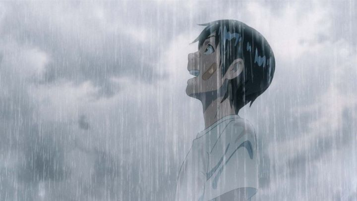

Disclaimer: Minor spoilers.Makoto Shinaki has been making anime films for nearly 20 years. But he never really had the attention he deserved until 2016's "Your Name.," earning praise from critics and fans around the world. It was his first major "commercial" film, distributed by large film company Toho. It would break records for Japanese cinema and animation. As happy as long-time fans were to see Shinkai achieve mainstream success, we didn't envy his position: how would he top "Your Name." for his next feature?While Shinkai has experimented a little, he also tends to stick to the same story themes of youthful romance. As expected, his follow-up 2019 film, "Weathering With You," would be very similar to "Your Name." It features a fantastical element to drive the story, two teenagers to add a sense of humor before romance rears its head, a major environmental catastrophe, and even music from returning J-POP group RADWIMPS. There's even a not-so-subtle cameo by "Your Name."'s romantic leads. At the same time, I was surprised by some interesting risks he takes with "Weathering With You." It's not an all-around step forward; in some ways, it's an unexpected step back. But it still succeeds at being a crowdpleaser. No doubt Shinkai felt pressure, though. Despite the success of 'Your Name.," and a strong push from American distributor Funimation, it would be snubbed from major international awards. This probably led to "Weathering With You" to be given to GKIDS, a distribtor with a fantastic track record for giving independent foreign animation a nomination at the Oscars. But in 2019, GKIDS didn't have many strong contenders, and seemingly invested a lot more into acquiring both new and old anime films, an easy money maker. Lack of confidence, perhaps due to comparisons to "Your Name.," put theatrical releases for "Weathering With You" at the end of awards season. Neither it, nor any other GKIDS film, got a nomination for Oscar's "Best Animated Feature." I'm not saying "Weathering" had much chance based on its own merits, but a lot of fans looked forward to the film for nearly a year, so it felt like a shame and a disservice. The movie starts with 16-year-old Hodaka Morishima. He's running away from home, deciding to go to Tokyo. One of the biggest disappointments is a lack of any explanation or revelation about why Hodaka ran away; presumably, we are to assume it to be just youthful restlessness. Alone in Tokyo, Hodaka is quickly overwhelmed by the size and bustle, struggling to understand it, and struggling to find a way to make money without a student I.D. (while also avoiding police who would question a teenager living without a guardian). All the while, Tokyo seems to be bombarded by near-constant and unpredictable rainfall.Through chance and circumstance, Hodaka manages to find a job with room and board, working for a small magazine publisher that specializes in superstition and urban myths. One popular myth is of "Sunshine Girls," girls with the ability to make the rain go away. Also by chance, Hodaka comes across Hina, another teenager living alone with her younger brother: Hina secretly has the ability to pray to the sky and make the rain stop for a short period of time. They decide that Hina can use this power to residents who make an offering to make the rain stop, be it for an outdoor fair, a wedding, or a family vacation. Things seem to work out great and without sacrifice... but what is the true nature of Hina's power? And what will it ultimately cost?I already mentioned that Hodaka's backstory is left untold. That's one of several plot threads left open or unexplaned. It's a shame too, as the fantastical element is compelling, and made fun thanks to a strong cast of characters. Premise aside, "Weathering With You" probably has one of Shinaki's weakest stories, possibly due to pressure to hurry and finish it. The first half of the movie focuses primarily on life in Tokyo, rendered in great detail (with no attempt to hide signs or branding for railways, soda or restaurants... giving the possibly false impression of excessive product placement). It's a bit more realistic than the typically idealized version of Japanese life we're used to seeing in anime. Like "Your Name.," it provides plenty of opportunity for humor.  I was shocked at the level of sex jokes, ranging from Hodaka being accused for staring at boobs, to Hina's younger brother having multiple girlfriends (at barely 10 years old, Hodaka begins to call him "sempai"). One of the first major meetings between Hodoka and Hina involves her about to go into a love hotel with an older man, due to a "pre-arranged agreement" (before using her abilities, she also struggled to make ends meet for her and her brother). While it's generally light-hearted, "Weathering With You" seems to have an older audience in mind compared to Shinkai's other films, earning it a PG-13 rating in America. I'm not certain about how I feel about that.Story concerns aside, the film is relatively fun to follow, and leads up to an exciting climax. Naturally, Hina's power does have a cost. The film's use of weather begins to have a strong relation to modern fears of climate change. The question comes up: if we could sacrifice one girl to make the weather go back to normal, would it be worth it? The mass public has no idea of Hina's role, but even if they did, they might accept the price. The rain affected millions of families and workers in their daily lives, to the point of becoming unbearable. But it isn't up to the masses: it's ultimately up to Hodaka. While the action-packed, dramatic chase scene at the climax was a bit overkill, the decision is compelling, and as expected for a Shinkai lead, Hodaka chooses love over the world. It's a happy choice, but not without consequence. The ending might shock and confuse viewers as to how they should feel. But again, in 2019, such an apocalyptic ending doesn't seem so unrealistic anymore. That divisive ending is the biggest point of value for "Weathering With You," making it an effective movie for the cause of climate change, and an impressively daring choice for Shinkai. In a movie full of raindrops and blazing sunshine, "Weathering With You" has the visual hallmarks Shinkai is known for. It should be his most beautiful movie yet. As expected, it borrows a lot from "Your Name." and "The Garden of Words." But when I saw this in a movie theater... perhaps it was due to the projector, but colors didn't pop nearly as much as I hoped, feeling muted in a disappointing way. 3D environments are used more aggressively, sometimes to good effect, but sometimes 2D characters don't mesh perfectly with it, and one city shot in the middle looks realistic to the point that it felt like it came from a completely different movie. Overall, production values feel a step down compared to the studio's recent films, possibly due to the shear amount of work with all the animating rain, and again possibly due to lack of time. Despite the decrease in quality, any Shinkai movie still looks better than standard anime, but try to watch it on a good HDR television if possible.RADWIMPS returns to provide a few vocal pop songs, with both male and female soloists. Unlike "Your Name.," they weren't so ambitious to supply English versions of each song for American audiences (although one English song is used in the credits). While not as fresh, the music is enjoyable, and especially effective in a fantastical moment near the end. GKIDS has an English dub that provides a lot of personality to the extra characters, but unfortunately, the main leads, Hodaka and Hina, don't sound as convincing. I kept thinking I was listening to unexperienced actors for them in English, which is distracting since the film relies on them so heavily. The original Japanese dub was more particular, auditioning over 2,000 actors for those two lead roles, so I'd agree to trying that version if giving the choice. Despite many similarities, "Weathering With You" is distinct from "Your Name." and any of Makoto Shinaki's other works. It's not necessarily better, but I applaud it for taking chances while still managing to be a general crowd-pleaser that the average viewer can enjoy. The immediate follow-up to a mass hit is always the hardest, and by now, Shinkai probably has enough money and talented staff to be in one of the best possible positions he can be in. Hopefully, pressure won't get to him, and he'll take his time with whatever he plans to make in the future.
- "Ani" More reviews can be found at : https://2danicritic.github.io/ Previous review: review_Watership_Down Next review: review_Welcome_to_the_N.H.K.